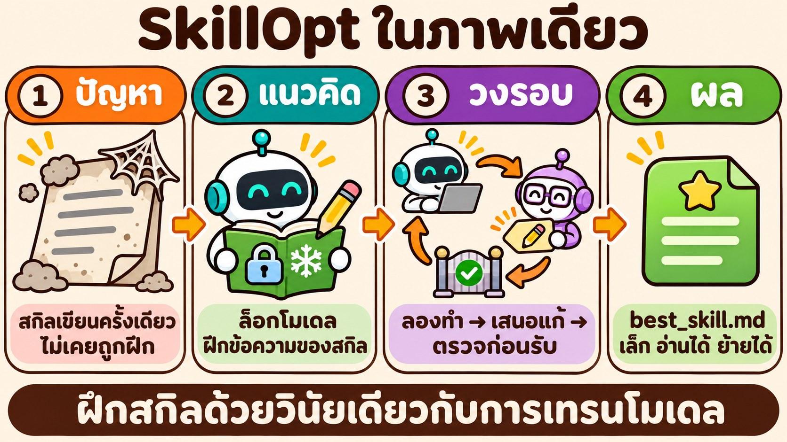
best_skill.md ขนาดประมาณ 300–2,000 โทเคน ที่คนอ่านได้ และย้ายไปใช้กับโมเดลหรือ Harness อื่นได้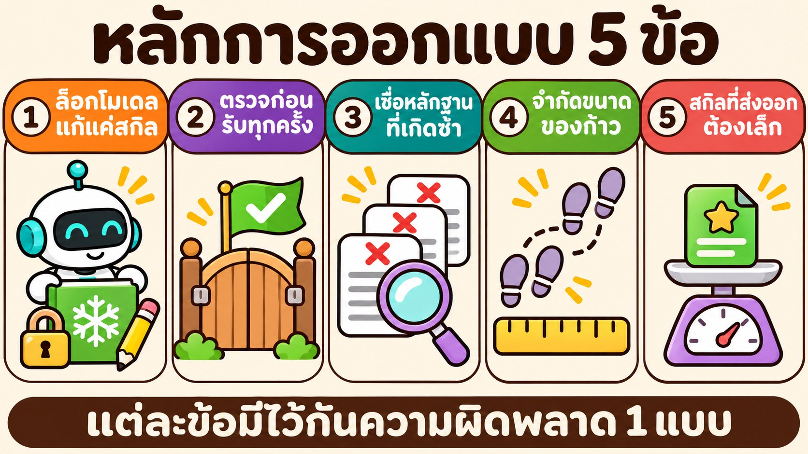
Gradient Descent ทำงานอย่างไร · ทำไมเทรนสกิลแทนน้ำหนัก · อะไรตรงกับอะไร · ทำไมการปรับข้อความจึงยาก
โจทย์ในรูปสมการ 3 สมการ · หนึ่งก้าวของ SkillOpt (Forward · Backward · Gate · ความจำ) · Algorithm 1
ได้ผลแค่ไหน · ส่วนไหนสำคัญ · ย้ายไปใช้ที่อื่นได้หรือไม่ · สกิลที่ได้หน้าตาอย่างไร
LAB money-coder ตรงและต่างจากเปเปอร์ตรงไหน · วิธีคิดในการออกแบบ 7 ข้อ · ตรวจความเข้าใจ
01_theory/README.md · ภาคปฏิบัติอยู่ใน สไลด์ของบทต้องเข้าใจส่วนนี้ก่อน เพราะ SkillOpt ยืมโครงของมันมาทั้งชุด
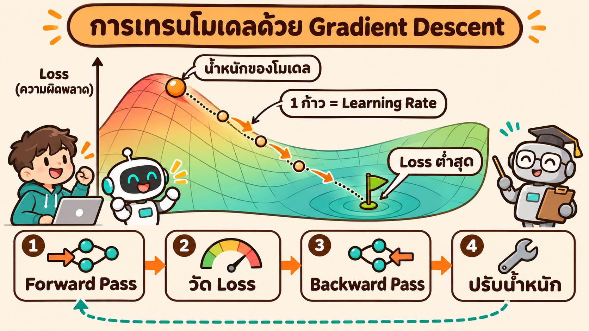
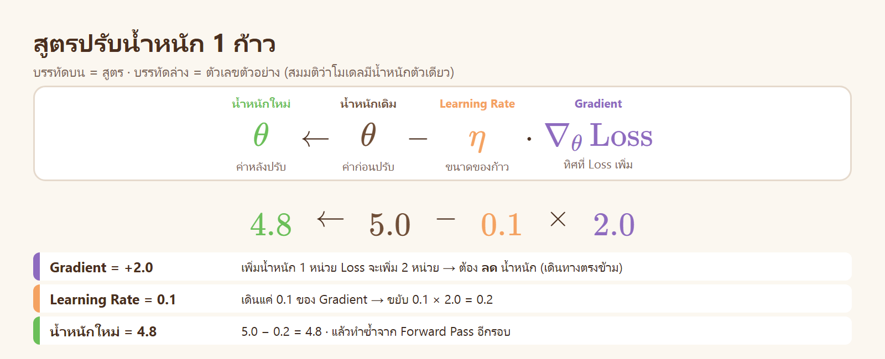
Gradient บอกทิศ ณ จุดที่ยืนอยู่เท่านั้น จึงเดินทีละน้อยแล้วคำนวณใหม่ · SkillOpt ใช้เหตุผลชุดเดียวกัน
ขนาดของก้าว · ใหญ่ไป = กระโดดข้ามหุบเขา ผลไม่นิ่ง · เล็กไป = ช้า
ข้อมูลกลุ่มเล็กที่ใช้ต่อ 1 ก้าว · กลุ่มเล็ก = เร็วแต่ทิศแกว่ง · กลุ่มใหญ่ = ทิศนิ่งแต่ช้า
ใช้ข้อมูลฝึกครบ 1 รอบ · –
ข้อมูลที่ไม่ใช้ฝึก ใช้ตรวจว่าโมเดลดีขึ้นจริง · โมเดลจำข้อมูลฝึก (Overfitting) โดยไม่มีใครรู้
สำเนาของน้ำหนักที่ Validation ดีที่สุด · ได้โมเดลรุ่นสุดท้าย ซึ่งอาจไม่ใช่รุ่นที่ดีที่สุด
จำทิศของก้าวก่อน ๆ มาช่วยก้าวปัจจุบัน · ทิศแกว่งไปมาตามข้อมูลแต่ละกลุ่ม
ข้อมูลที่เปิดใช้ครั้งเดียวตอนรายงานผล · ผลที่รายงานดีเกินจริง
ถ้าสิ่งที่ Agent ขาดคือ วิธีทำงาน ทำไมต้องไปแก้น้ำหนักของโมเดล
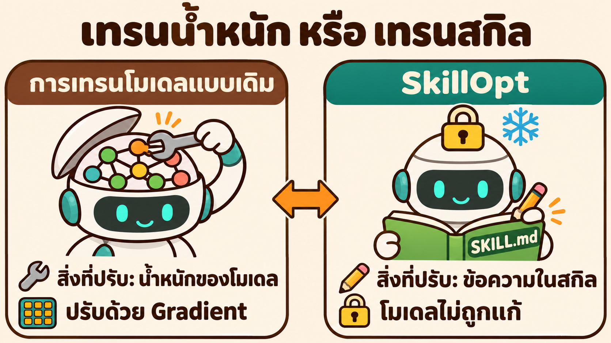
สกิล = ข้อความภาษาคนที่ใส่ให้ Agent ก่อนทำงาน · โมเดลถูกล็อก · สิ่งเดียวที่ถูกปรับคือข้อความ
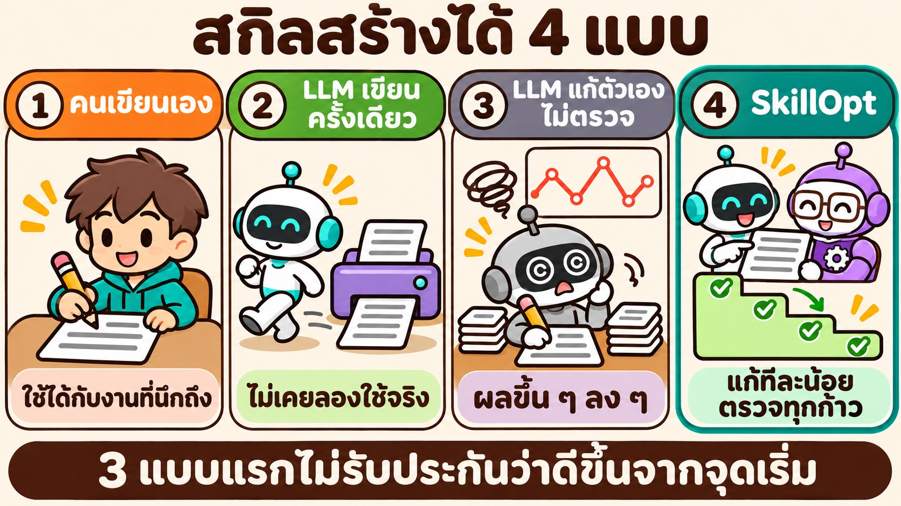
| การเทรนโมเดลแบบเดิม | SkillOpt | |
|---|---|---|
| สิ่งที่ถูกปรับ | น้ำหนักหลายพันล้านตัว | ข้อความในสกิล 1 ไฟล์ (ประมาณ 300–2,000 โทเคน) |
| โมเดล | ถูกแก้ | ถูกล็อก (Frozen) ไม่แตะเลย |
| ใช้กับโมเดลปิดได้หรือไม่ | ไม่ได้ (ไม่มีสิทธิ์แก้น้ำหนัก) | ได้ |
| คนอ่านผลลัพธ์ออกหรือไม่ | ไม่ออก | อ่านออก เป็นภาษาคน |
| ย้ายไปใช้กับโมเดลอื่น | ไม่ได้ | ได้ (เปเปอร์ทดลองแล้ว ข้อ 8) |
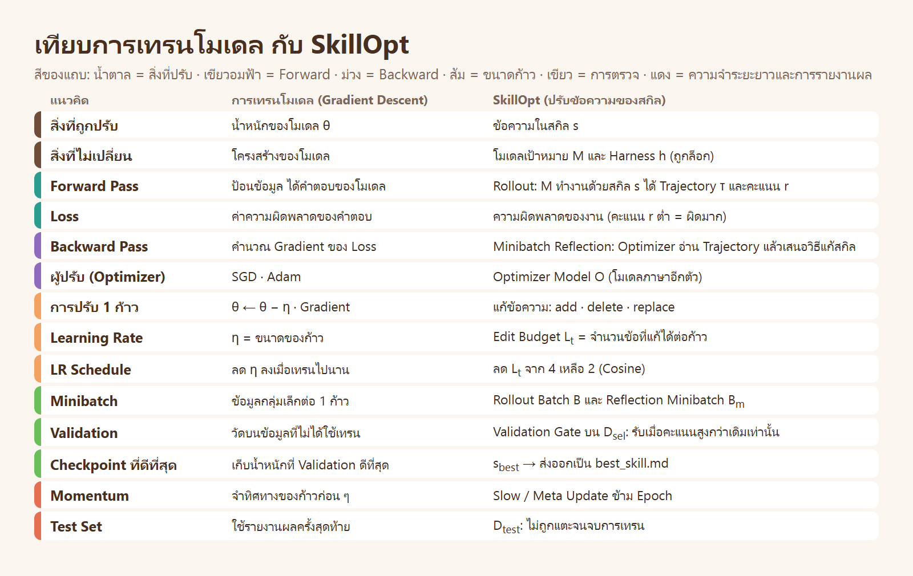
ซ้าย = ชื่อแนวคิด · กลาง = ในการเทรนโมเดล · ขวา = สิ่งที่ทำหน้าที่เดียวกันใน SkillOpt
ขนาด Rollout Batch และ Reflection Minibatch · ความแกว่งของหลักฐานที่ใช้เสนอ Edit
จำนวน Edit สูงสุดต่อก้าว Lt และการลดตามเวลา · สกิลรุ่นใหม่ต่างจากรุ่นก่อนได้แค่ไหน
Validation Gate บน Dsel · รับหรือไม่รับรุ่นใหม่
Slow Update และ Meta Skill · ทิศของการแก้ไม่เปลี่ยนไปมาตามงานกลุ่มล่าสุด
ต่างจากการเทรนโมเดล: เรามองไม่เห็นพื้นผิวนี้ จะรู้ความสูงของจุดใด ต้องให้โมเดลทำงานจริงด้วยสกิลรุ่นนั้นแล้ววัด
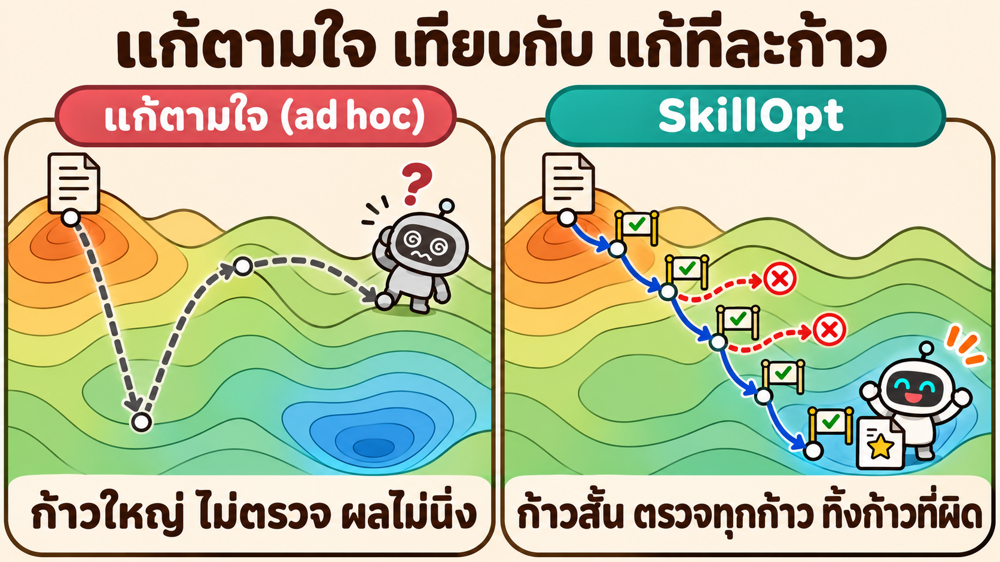
ก้าวสั้นทำให้รู้ว่าข้อไหนทำให้คะแนนเปลี่ยน และประวัติของก้าวก่อนยังใช้กับรุ่นถัดไปได้
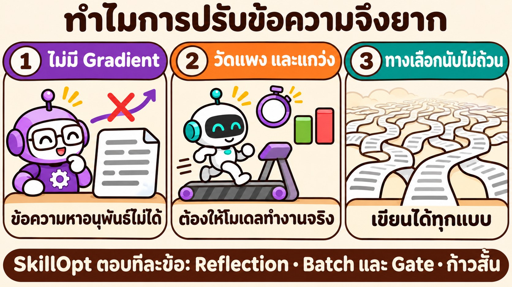
Gate รับเมื่อสูงกว่าเดิมเท่านั้น · ก้าวที่ผิดไม่ถูกนำไปใช้ต่อ
จำนวน Edit ไม่เกิน Lt · รู้ว่าข้อไหนทำให้คะแนนเปลี่ยน และประวัติยังใช้ได้
Rejected-Edit Buffer · ไม่เสียงบวัดไปกับข้อเสนอเดิม
Slow Update และ Meta Skill · เก็บบทเรียนที่ใช้ได้นานข้าม Epoch
3 สมการต่อกันเป็นสายเดียว: วัด งาน 1 ชิ้น → เลือก สกิลรุ่นที่ดีที่สุด → รายงาน ผลของรุ่นที่เลือก
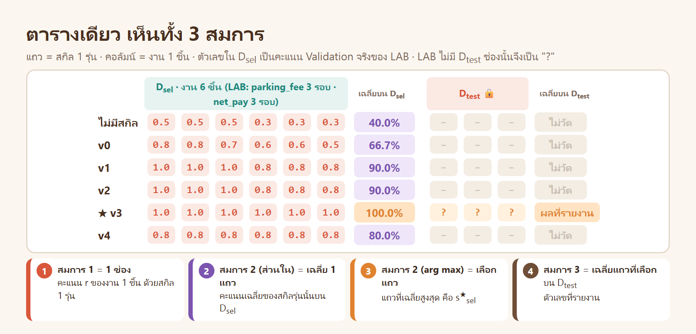
แถว = สกิล 1 รุ่น · คอลัมน์ = งาน 1 ชิ้น · ตัวเลขในช่อง = คะแนน
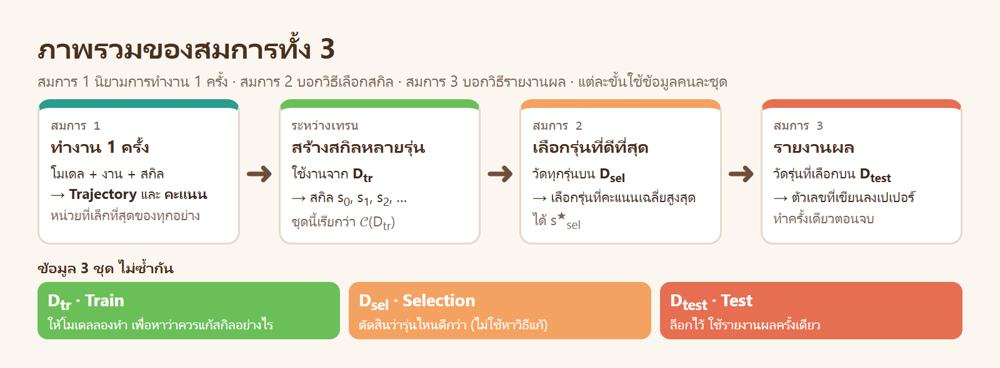
Dtr ให้ประสบการณ์ · Dsel ใช้ตัดสินรับหรือไม่รับ · Dtest ใช้รายงานผลครั้งเดียวตอนจบ
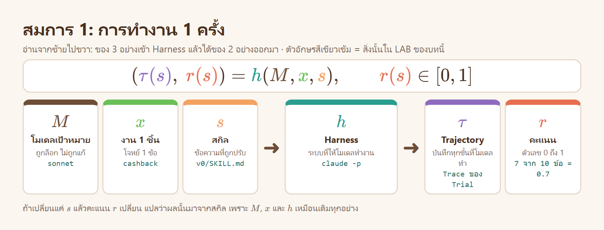
ใน LAB: h( sonnet , cashback , v0/SKILL.md ) → ( Trace ของ Trial นั้น , 0.7 ) · M และ h ไม่เปลี่ยน คะแนนจึงเป็นฟังก์ชันของสกิล
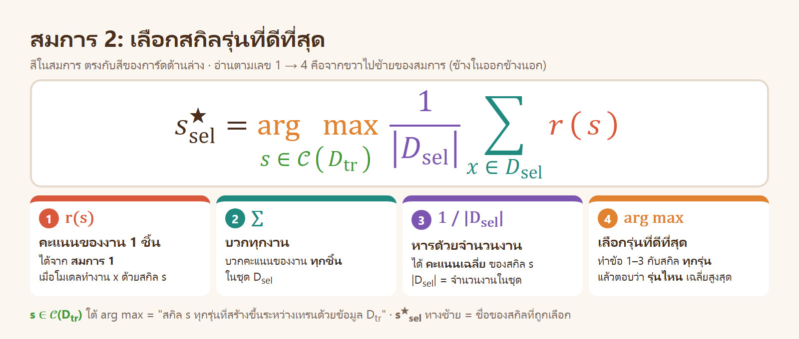
อ่านจากขวาไปซ้าย: คะแนนของงาน 1 ชิ้น → บวกทุกงาน → หารด้วยจำนวนงาน → เลือกรุ่นที่สูงสุด
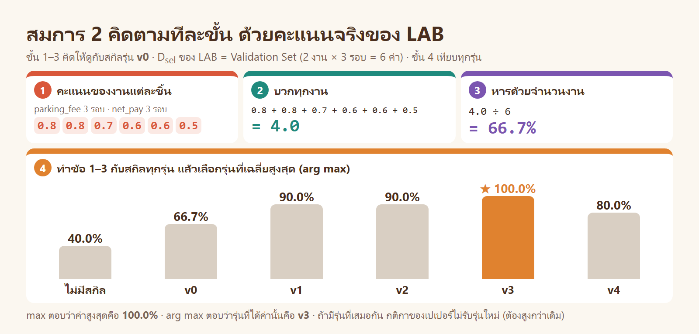
max ตอบว่าค่าสูงสุดเท่ากับเท่าไร · arg max ตอบว่า รุ่นไหน ได้ค่านั้น
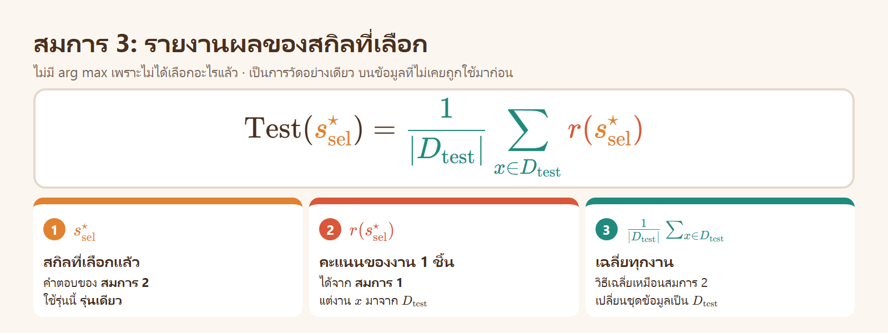
ทำครั้งเดียวตอนจบ · LAB ของเราไม่มี Dtest (แบบฝึกหัดข้อ 2)
สกิลถูกแก้จากข้อผิดของ Dtr คะแนนบนชุดนั้นจึงสูงเสมอ · Dsel ไม่ถูกใช้หาวิธีแก้ ถ้าคะแนนขึ้นที่นี่ด้วย แปลว่าสกิลดีขึ้นจริง
สกิลถูกเลือกเพราะได้คะแนนบน Dsel สูงสุดในหลายรุ่น ส่วนหนึ่งมาจากความบังเอิญ เหมือนทอยลูกเต๋า 10 ครั้งแล้วรายงานเฉพาะครั้งที่แต้มสูงสุด
Forward Pass (ลองทำงาน) → Backward Pass (หาวิธีแก้สกิล) → Validation Gate (รับ หรือ ไม่รับ)
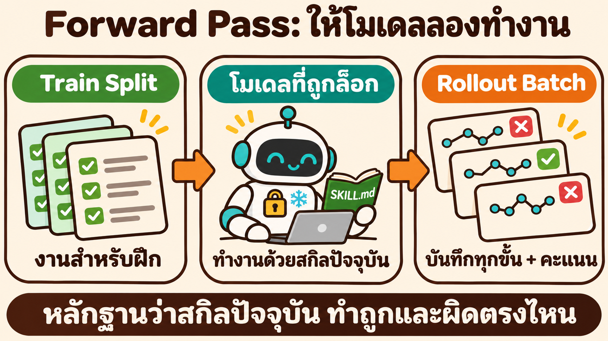
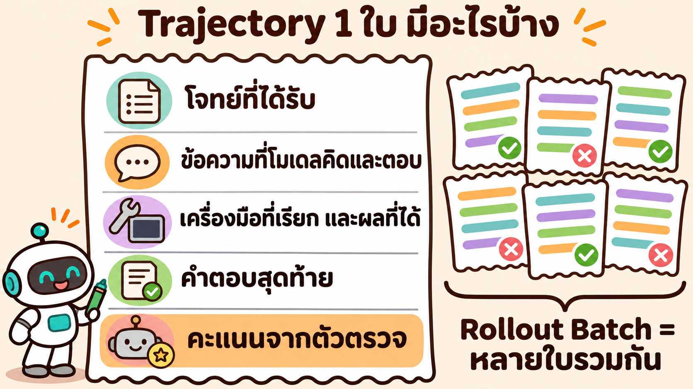
คะแนนบอกว่า ผิด · Trajectory บอกว่า ผิดเพราะอะไร ซึ่งเป็นสิ่งที่ Backward Pass ต้องใช้
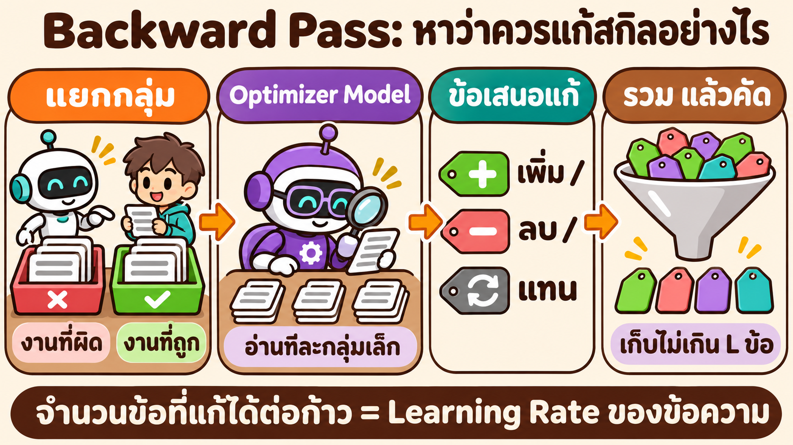
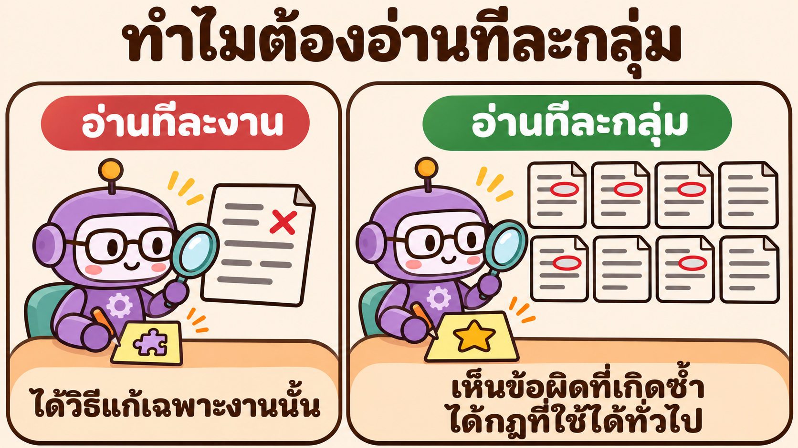
อ่านทีละงานได้วิธีแก้เฉพาะงานนั้น · งานที่ผิดบอกว่าสกิลขาดอะไร · งานที่ถูกบอกว่าอะไรต้องรักษาไว้
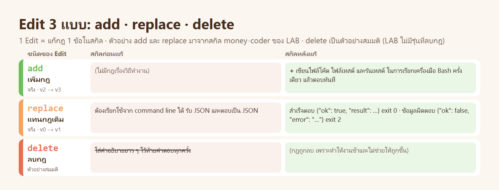
Optimizer เสนอเป็น Edit ทีละข้อ ไม่เขียนสกิลใหม่ทั้งไฟล์ ทุก Edit จึงตรวจย้อนได้ว่ามาจากหลักฐานกลุ่มไหน
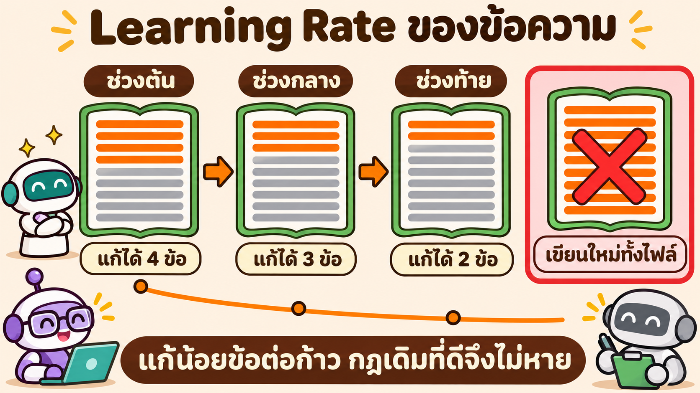
เริ่มที่ 4 ลดแบบ Cosine จนเหลือ 2 · ช่วงต้นสกิลยังขาดมาก ช่วงท้ายควรเก็บรายละเอียดโดยไม่ทำของเดิมพัง
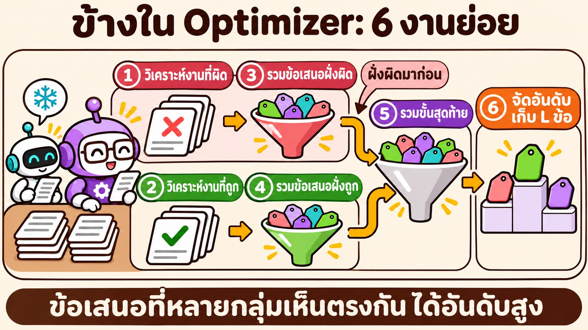
LL ข้อแรก| ลำดับ | เกณฑ์ | ความหมาย | ตัวอย่างจาก LAB |
|---|---|---|---|
| 1 | ผลต่อข้อผิดที่เกิดซ้ำ | กฎที่แก้ข้อผิดได้ครึ่งหนึ่งของงาน สำคัญกว่ากฎที่แก้กรณีเดียว | cli_ok ผิด 12/12 จึงแก้ก่อน |
| 2 | เติมช่องว่างของสกิล | ไม่ซ้ำกับสิ่งที่สกิลมีอยู่แล้ว | นโยบายธุรกิจที่ v1 ไม่มีเลย |
| 3 | ความทั่วไป | เขียนเป็นหลักการ ไม่ผูกกับโจทย์หรือชื่อเฉพาะ | "เงินที่ร้านจ่ายออกให้ปัดลง" ไม่ใช่ "cashback(10020, …) ต้องได้ 250" |
| 4 | ความชัดเจน | บอกสิ่งที่ต้องทำได้ชัด ไม่ใช่คำแนะนำกว้าง ๆ | {"ok": true, "result": …} exit 0 ไม่ใช่ "ตอบเป็น JSON" |
v0 → v1 ของ LAB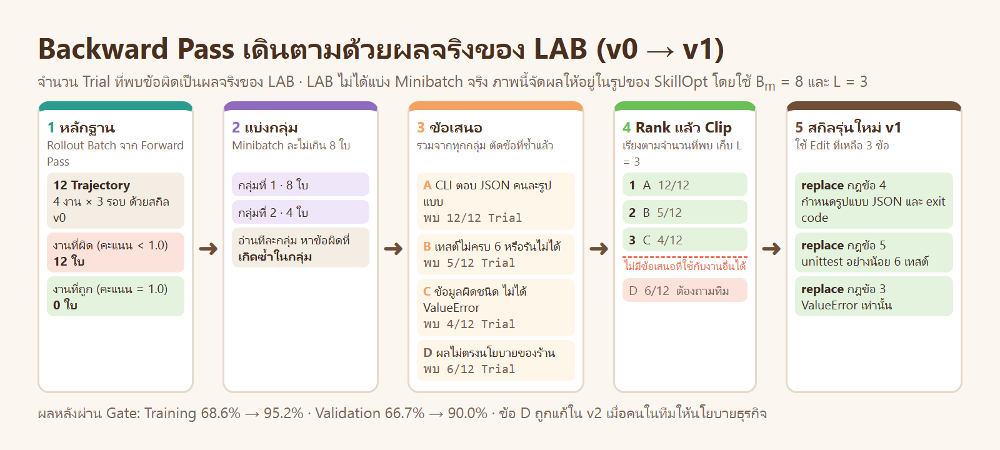
ข้อ D พบบ่อยเป็นอันดับ 2 แต่ถูกเว้นไว้ เพราะข้อมูลไม่พอจะเขียนเป็นกฎ = Reflection บอกได้ว่าความรู้ขาดตรงไหน แต่บางครั้งความรู้ต้องมาจากคน
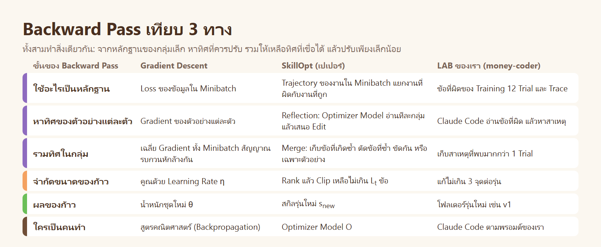
หลักฐาน → หาทิศ → รวมทิศ → จำกัดก้าว เหมือนกันทั้ง Gradient Descent · SkillOpt · LAB ของเรา
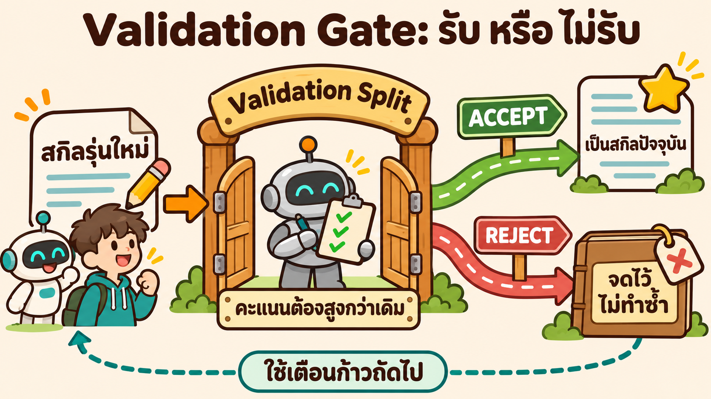
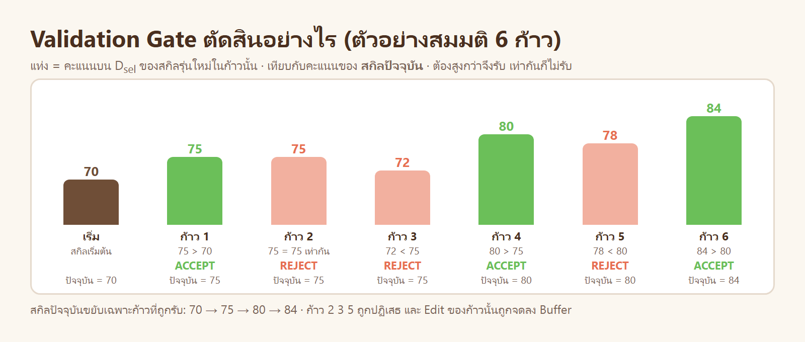
สกิลปัจจุบันไม่เคยแย่ลง · เท่ากันก็ไม่รับ · ก้าวถัดไปเริ่มจากสกิลปัจจุบันเสมอ
ถ้ารับรุ่นที่คะแนนเท่ากัน ข้อความของสกิลจะเปลี่ยนไปเรื่อย ๆ โดยไม่มีหลักฐานว่าดีขึ้น
ทุกการปฏิเสธบอก Optimizer ว่า Edit ชุดนั้นไม่ช่วย จึงถูกจดลง Buffer
ตลอดการเทรน 1 ครั้ง มีก้าวที่ถูกรับเพียง 1–4 ก้าว (Table 6 ของเปเปอร์ · ข้อ 8.9) ข้อเสนอส่วนใหญ่ไม่เคยไปถึงโมเดลที่ทำงาน
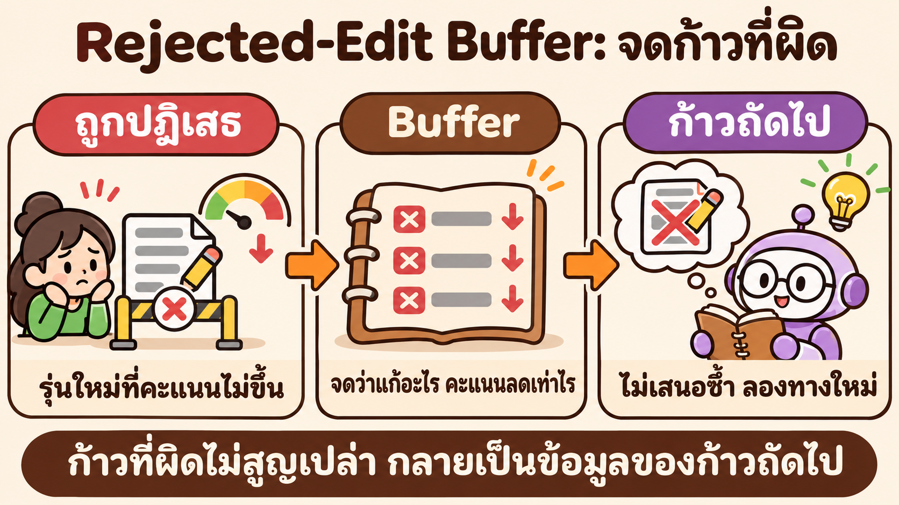
จด Edit ที่ลอง และคะแนนที่ลดลง · อยู่ภายใน Epoch เดียว · ใน LAB คือ runs/ISSUES.md
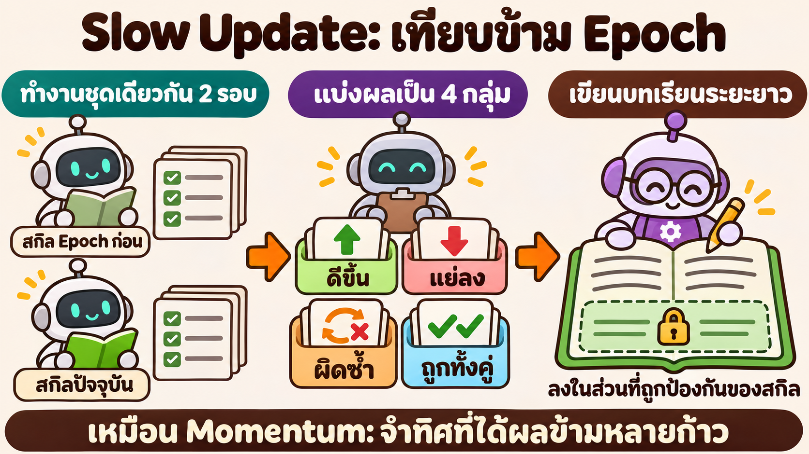
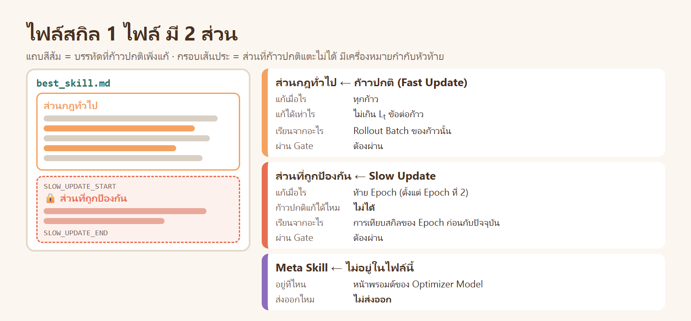
ก้าวปกติแก้ส่วนที่ถูกป้องกันไม่ได้ จึงเขียนทับบทเรียนระยะยาวไม่ได้
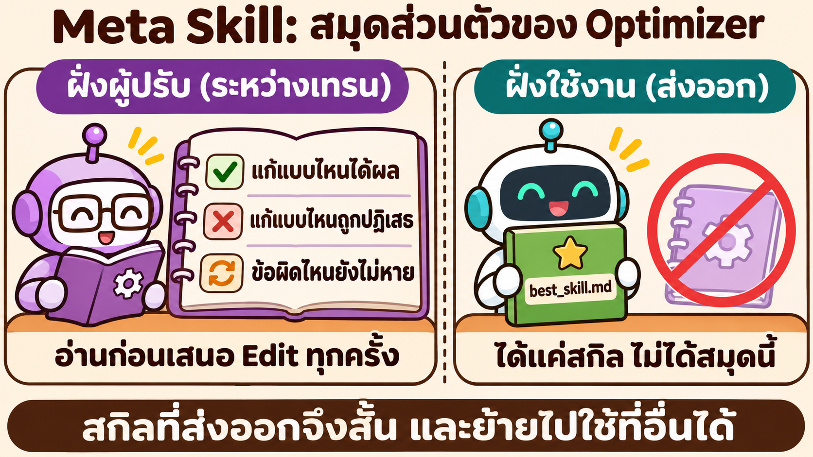
จดว่าแก้แบบไหนได้ผล แบบไหนถูกปฏิเสธ · โมเดลที่ทำงานไม่เห็น และไม่ถูกส่งออกไปกับสกิล
| Rejected-Edit Buffer (ข้อ 6.3) | Slow Update | Meta Skill | |
|---|---|---|---|
| จำอะไร | Edit ที่เพิ่งถูกปฏิเสธ | บทเรียนเรื่อง วิธีทำงาน | บทเรียนเรื่อง วิธีแก้สกิล |
| จำนานแค่ไหน | ภายใน Epoch เดียว | ข้าม Epoch | ข้าม Epoch |
| ใครอ่าน | Optimizer | โมเดลที่ทำงาน | Optimizer |
| อยู่ในสกิลที่ส่งออก | ไม่ | อยู่ | ไม่ |
| เทียบกับการเทรนโมเดล | ไม่มีสิ่งที่เทียบได้ตรง ๆ | Momentum | Momentum |
| ใน LAB ของเรา | ISSUES.md | ไม่มี | ISSUES.md |
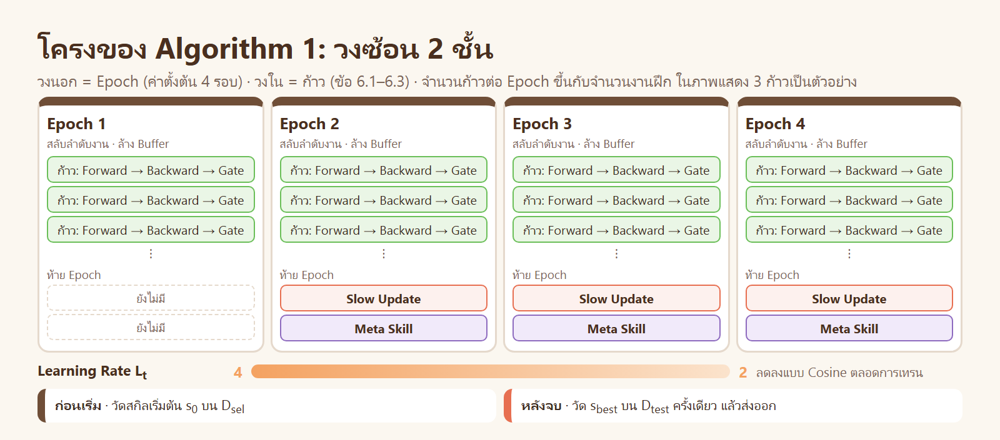
วงนอก = Epoch · วงใน = ก้าว (Forward → Backward → Gate) · ท้าย Epoch ที่ 2 เป็นต้นไปมี Slow Update และ Meta Skill
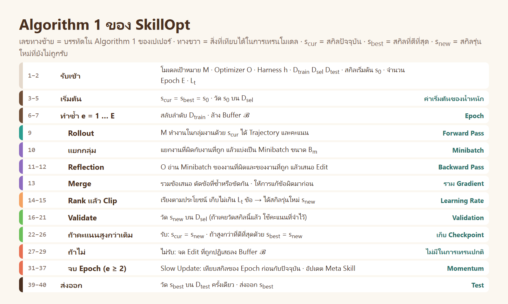
จุดที่ต่างที่สุด: การเทรนโมเดลวัด Validation ท้าย Epoch · SkillOpt วัด ทุกก้าว · คลิกภาพเพื่อขยาย
สกิลปัจจุบัน = จุดเริ่มของก้าวถัดไป · ทุกครั้งที่ Gate รับ
สกิลที่ได้คะแนนบน Dsel สูงสุดเท่าที่เคยมี = สิ่งที่ส่งออก · เมื่อรุ่นที่รับได้คะแนนสูงกว่าทุกรุ่นก่อนหน้า
ตารางจำคะแนนของสกิลที่เคยวัดแล้ว (Cache) · ทุกครั้งที่วัดสกิลรุ่นใหม่
Rejected-Edit Buffer · เพิ่มเมื่อ Gate ไม่รับ · ล้างทุกต้น Epoch
Meta Skill · ท้าย Epoch (ตั้งแต่ Epoch ที่ 2)
| ค่า | สัญลักษณ์ | ค่าตั้งต้น | คุมอะไร | เทียบกับการเทรนโมเดล |
|---|---|---|---|---|
| จำนวน Epoch | E | 4 | เทรนนานแค่ไหน | Epoch |
| ขนาด Rollout Batch | B | 40 งานต่อก้าว | หลักฐานต่อก้าว | Batch Size |
| ขนาด Reflection Minibatch | Bm | 8 | Optimizer อ่านครั้งละกี่งาน | – |
| Learning Rate ของข้อความ | Lt | 4 ลดแบบ Cosine เหลือ 2 | แก้ได้กี่ข้อต่อก้าว | Learning Rate และ Schedule |
| กติกาของ Gate | – | คะแนนต้องสูงกว่าเดิม (เท่ากันไม่รับ) | รับหรือไม่รับ | Validation |
| Slow Update | – | เทียบ 20 งานต่อ Epoch | ความจำข้าม Epoch | Momentum |
| รูปแบบการแก้ | – | Patch (แก้เฉพาะจุด) | แก้ทีละข้อ ไม่เขียนใหม่ทั้งไฟล์ | – |
ทดลองอย่างไร · ได้ผลแค่ไหน · ส่วนไหนของระบบที่ทำให้ได้ผล · ใช้นอกการทดลองได้แค่ไหน
6 Benchmark (ตารางถัดไป)
7 โมเดล ตั้งแต่ขนาดใหญ่ (GPT-5.5) ถึงขนาดเล็ก (Qwen 4B)
3 แบบ: Direct Chat · Codex · Claude Code
ไม่มีสกิล · สกิลที่คนเขียน · สกิลที่ LLM เขียนครั้งเดียว · วิธีปรับอัตโนมัติอื่น
คะแนนบน Test Split (สมการ 3) ด้วยตัวตรวจของแต่ละ Benchmark
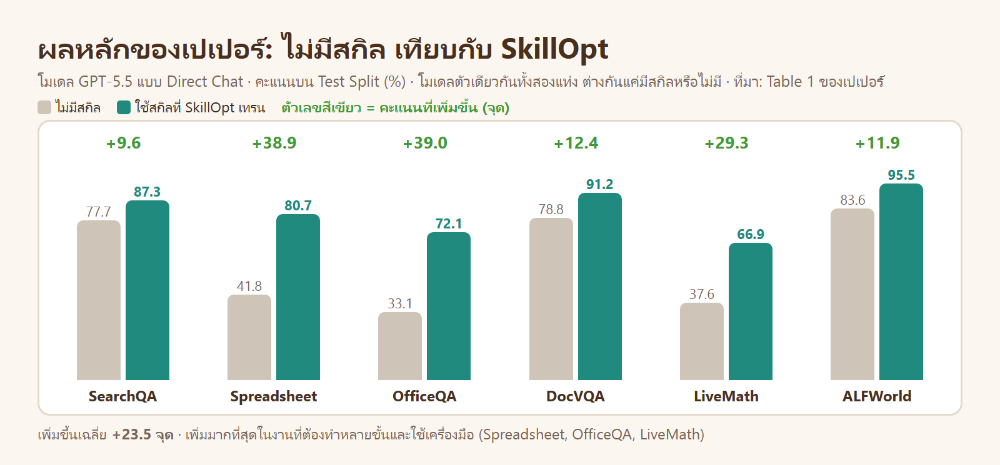
GPT-5.5 เพิ่มเฉลี่ย +23.5 จุด · งานที่คะแนนตั้งต้นต่ำได้เพิ่มมาก เช่น SpreadsheetBench 41.8 → 80.7
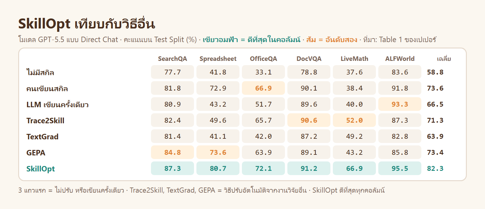
วิธีปรับอัตโนมัติบางวิธีทำให้แย่ลงได้ · SkillOpt ดีที่สุดหรือเท่ากับดีที่สุดใน 52 จาก 52 การทดลอง
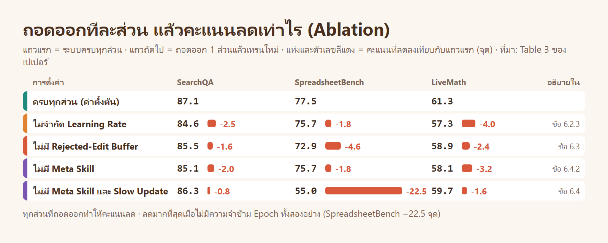
ถอดส่วนไหนแล้วคะแนนลด แปลว่าส่วนนั้นมีผลจริง · ถอดความจำระยะยาวทั้งหมด เสียหายมากที่สุด
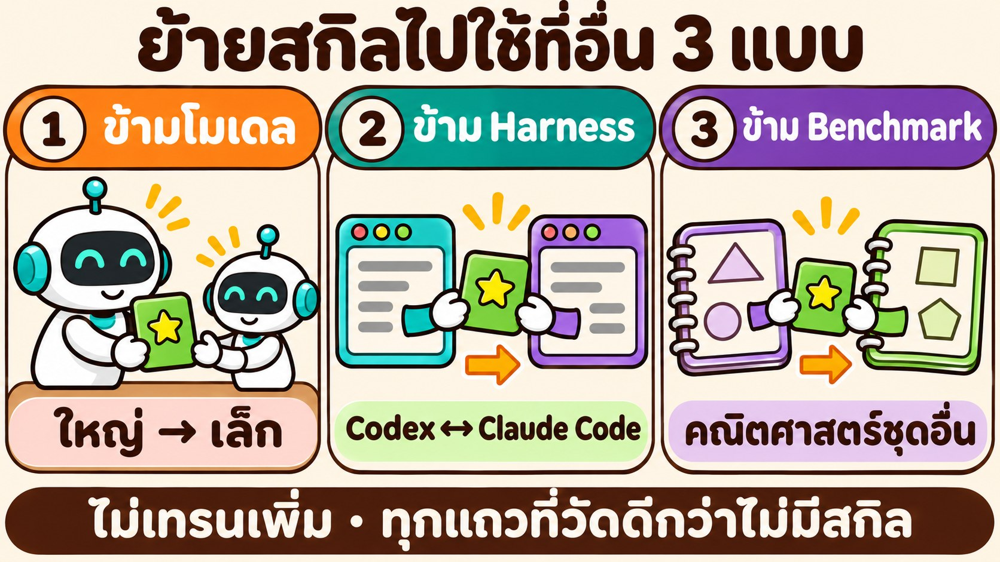
| ย้ายอย่างไร | ตัวอย่าง | ไม่มีสกิล | ใช้สกิลที่ย้ายมา | เทรนที่ปลายทางเอง |
|---|---|---|---|---|
| ข้ามโมเดล (ใหญ่ → เล็ก) | SpreadsheetBench: GPT-5.4 → GPT-5.4-mini | 36.1 | 45.5 | 47.5 |
| ข้าม Harness | SpreadsheetBench: Codex → Claude Code | 22.1 | 81.8 | 80.4 |
| ข้าม Harness | LiveMath: Codex → Claude Code | 40.8 | 42.4 | 56.5 |
| ข้าม Benchmark | OlympiadBench → Omni-MATH (GPT-5.4) | 56.6 | 60.3 | – |
สกิลที่คนเขียนยาว 145–516 โทเคนอยู่แล้ว และมักยาวกว่าสกิลที่ LLM เขียนครั้งเดียว แต่ยังแพ้ SkillOpt · Table 1 และ Table 6
ใช้โมเดลตัวเดียวกันเป็น Optimizer ก็ยังได้ผลส่วนใหญ่ · Table 5 (ข้อ 8.8)
ใน Codex วิธี EvoSkill เพิ่ม SpreadsheetBench จาก 27.5 เป็น 67.5 แล้ว SkillOpt ยังเพิ่มต่อเป็น 85.0 · Table 1 ส่วน Codex
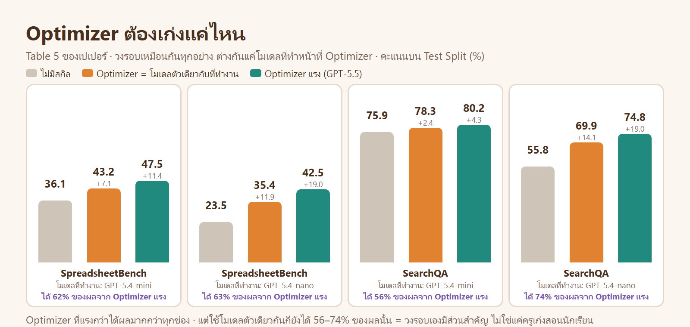
Optimizer ทำงานเฉพาะตอนเทรน · ใช้โมเดลตัวเดียวกับที่ทำงานก็ยังได้ 56–74% ของผล = วงรอบเองมีส่วนสำคัญ
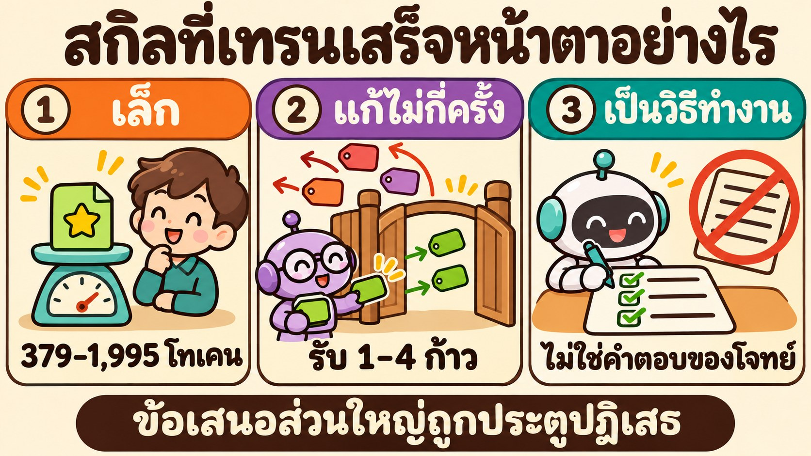
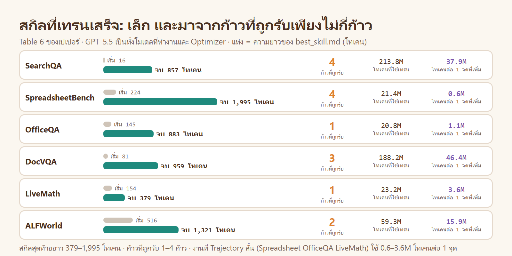
LiveMath ได้ +29.3 จุด และ OfficeQA ได้ +39.0 จุด จากก้าวที่ถูกรับเพียงก้าวเดียว
| Benchmark | กฎที่สกิลเรียนรู้ได้ (สรุปความ) | เป็นเรื่องของ |
|---|---|---|
| SearchQA | ดูจากคำถามก่อนว่าต้องตอบสิ่งชนิดไหน แล้วตอบชื่อที่สั้นและเป็นมาตรฐานที่สุดที่หลักฐานรองรับ | รูปแบบคำตอบ |
| SpreadsheetBench | ตรวจโครงสร้างและสูตรของไฟล์ก่อน แล้วเขียนค่าที่คำนวณแล้วลงทุกช่องที่ถูกขอ ไม่รอให้โปรแกรมคำนวณใหม่ | ขั้นตอนทำงาน |
| OfficeQA | ยึดหน้าเอกสารที่ให้มาเป็นหลักฐานหลัก ล็อกตาราง วันที่ และหน่วย แล้วตอบค่าที่ปัดตามที่ขอ ไม่ใส่คำอธิบายเพิ่ม | รูปแบบคำตอบ |
| DocVQA | ผูกคำถามกับแถว หัวตาราง หรือช่องที่ตรงกันก่อน แล้วคัดลอกเฉพาะคำตอบในตำแหน่งนั้น | การอ้างหลักฐาน |
| LiveMath | ข้อสอบที่ถามข้อความที่แรงที่สุด ให้เรียงตัวเลือกตามความแรงของทฤษฎีบท | วิธีคิด |
| ALFWorld | จดว่าไปที่ไหนมาแล้วและที่ไหนยังไม่ได้ไป เปลี่ยนที่ค้นเมื่อพลาดซ้ำ | การจัดการการค้นหา |
เริ่มจาก: แผนกว้าง ๆ: หาของ หยิบ แปรรูปถ้าต้อง แล้ววาง
Edit ที่ถูกรับเพิ่ม: ต้องตรงชื่อของสิ่งของ · จำที่ที่ไปมาแล้ว · จำปลายทาง · เมื่อทำขั้นถัดไปได้ให้ทำเลย ไม่ตรวจซ้ำ
เริ่มจาก: ใช้ไลบรารี Python และรักษาเนื้อหาอื่นของไฟล์
Edit ที่ถูกรับเพิ่ม: เปิดไฟล์จริงแทนการดูตัวอย่าง · หาหัวตารางและช่วงเป้าหมาย · เขียนค่าที่คำนวณแล้ว · เปิดไฟล์ที่บันทึกแล้วตรวจขอบและช่องว่าง
v0 → v3 ของ LABLAB money-coder คือ SkillOpt ขนาดเล็กที่มีคนกำกับ
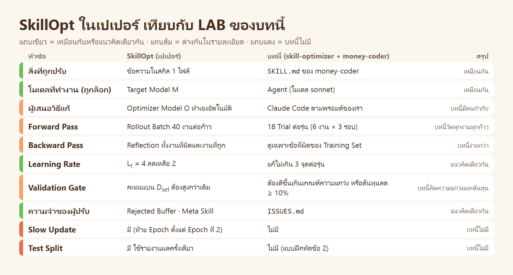
ชิ้นส่วนทุกชิ้นของ SkillOpt มีสิ่งที่ทำหน้าที่เดียวกันใน LAB · คลิกภาพเพื่อขยาย
| ขั้นของรีโปต้นฉบับ | ตรงกับข้อ | ใน LAB ของเรา | คำสั่งหรือไฟล์ |
|---|---|---|---|
| rollout | 6.1 Forward Pass | Agent ทำโจทย์ทุกข้อ × 3 รอบ | skillopt.py run |
| reflect | 6.2.1 Reflection | ดูข้อที่ผิดของ Training Set แล้วเปิด Trace และโค้ด | skillopt.py failures และ Claude Code |
| aggregate | 6.2.3 Merge | เก็บสาเหตุที่พบมากกว่า 1 Trial จดลงตาราง | runs/ISSUES.md |
| select | 6.2.3 Rank แล้ว Clip | เรียงตามจำนวน Trial ที่พบ เลือกไม่เกิน 3 จุด | ขั้นที่ 5 ของสกิล skill-optimizer |
| update | 6.2.2 Edit | คัดลอกโฟลเดอร์สกิลเป็นรุ่นใหม่ แล้วแก้ | runs/<รุ่นใหม่>/skills/ และ skillopt.py lint |
| evaluate | 6.3 Validation Gate | วัดรุ่นใหม่ แล้วให้โปรแกรมตัดสิน | skillopt.py run แล้ว gate |
skillopt.py ที่ผู้เรียนสร้างใน LAB 0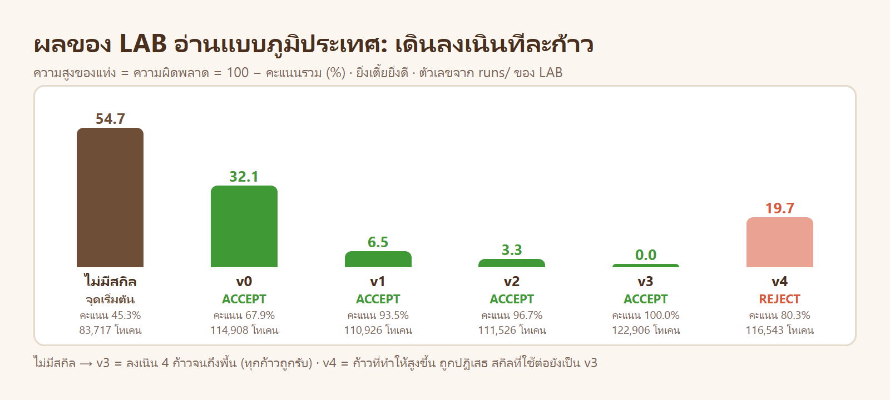
ความผิดพลาดลดจาก 54.7 เหลือ 0 ใน 4 ก้าวที่ถูกรับ · v4 คือก้าวที่ถูกปฏิเสธ และถูกจดลง ISSUES.md
| หัวข้อ | เปเปอร์ | LAB ของเรา | เหตุผลของ LAB |
|---|---|---|---|
| ใครเสนอวิธีแก้ | Optimizer Model ทำเองทั้งหมด | Claude Code ตามพรอมต์ของเรา | ผู้เรียนเห็นและเข้าใจทุกก้าว |
| จำนวนงาน | หลักสิบถึงหลักร้อยต่อชุด | Training 4 · Validation 2 | รันจบในไม่กี่นาที |
| กติกาของ Gate | คะแนนบน Dsel สูงกว่าเดิม | ดีขึ้น เกินความแกว่ง · Training และ Validation ไม่ลด | งานน้อย ผลต่างเล็ก ๆ อาจเป็นความบังเอิญ |
| คะแนนเท่ากัน | ไม่รับ | รับ ถ้าต้นทุนลดอย่างน้อย 10% | แสดงว่าปรับสกิลให้ถูกลงได้ด้วย |
| Slow Update | มี | ไม่มี | มีแค่ 5 ก้าว ยังไม่ถึงขั้นต้องมีความจำข้าม Epoch |
| Test Split | มี | ไม่มี | เป็นแบบฝึกหัดข้อ 2 |
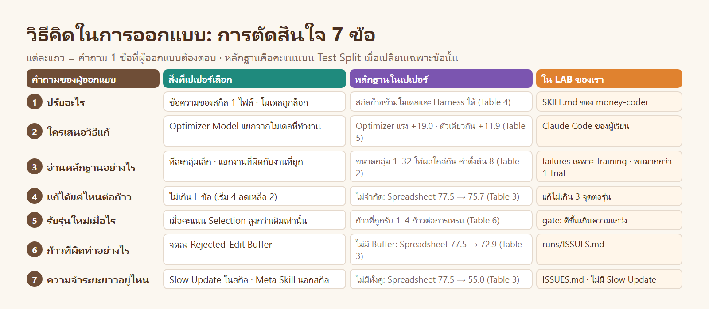
ทุกข้ออ่านตามลำดับเดียวกัน: คำถาม → ทางเลือก → สิ่งที่เลือก → เหตุผล → หลักฐาน → ใน LAB ของเรา
Agent ทำงานไม่ดีในโดเมนใหม่ ควรปรับส่วนไหนของระบบ
(ก) น้ำหนักของโมเดล · (ข) พรอมต์หรือการตั้งค่าทั้งระบบ · (ค) ข้อความของสกิล 1 ไฟล์
(ค) สกิล 1 ไฟล์ โดยล็อกโมเดลและ Harness
สิ่งที่ Agent ขาดคือ วิธีทำงาน ไม่ใช่ความสามารถของโมเดล · โมเดลปิดแก้น้ำหนักไม่ได้ · ข้อความคนอ่านและตรวจได้
สกิลที่เทรนแล้วย้ายข้ามโมเดล ข้าม Harness และข้าม Benchmark ได้ (ข้อ 8.5)
แก้ได้แค่ runs/<รุ่น>/skills/money-coder/SKILL.md ห้ามแก้โค้ดของ Agent โจทย์ หรือตัวตรวจ
ใครควรเป็นผู้อ่านหลักฐานและเขียน Edit
(ก) โมเดลที่ทำงานแก้สกิลของตัวเอง · (ข) โมเดลอีกตัวหนึ่งทำหน้าที่ Optimizer
(ข) แยก Optimizer Model ออกจากโมเดลที่ทำงาน
Optimizer ทำงานเฉพาะตอนเทรน จึงใช้โมเดลที่เก่งกว่าได้โดยไม่เพิ่มต้นทุนตอนใช้งาน · บันทึกของ Optimizer ไม่ปนกับสิ่งที่โมเดลที่ทำงานอ่าน
Optimizer แรงได้ +19.0 จุด · Optimizer ตัวเดียวกับโมเดลที่ทำงานได้ +11.9 จุด (SpreadsheetBench GPT-5.4-nano · ข้อ 8.8)
Optimizer = Claude Code ที่ผู้เรียนสั่งด้วยพรอมต์ · โมเดลที่ทำงาน = Agent (sonnet) ที่ skillopt.py run เรียกแยกทีละ Trial
จะเปลี่ยน Trajectory จำนวนมากเป็นข้อเสนอแก้ได้อย่างไร
(ก) อ่านทีละงาน แล้วเสนอแก้ทันที · (ข) อ่านทั้งหมดในครั้งเดียว · (ค) อ่านทีละกลุ่มเล็ก แยกงานที่ผิดกับงานที่ถูก แล้วรวมเป็นชั้น ๆ
(ค) อ่านทีละกลุ่มเล็ก แยกงานที่ผิดกับงานที่ถูก แล้วรวมข้อเสนอเป็นชั้น ๆ
งานเดียวให้วิธีแก้เฉพาะงานนั้น · กลุ่มเล็กทำให้เห็นข้อผิดที่เกิดซ้ำ · งานที่ถูกบอกว่าอะไรต้องรักษาไว้
เปลี่ยนขนาดกลุ่มตั้งแต่ 1 ถึง 32 ผลใกล้กัน โดยค่าตั้งต้น 8 อยู่บนสุดหรือใกล้บนสุด (Table 2) = สิ่งสำคัญคือการรวมหลักฐาน ไม่ใช่ตัวเลขที่แน่นอน
skillopt.py failures แสดงเฉพาะ Training Set · เก็บเฉพาะสาเหตุที่พบมากกว่า 1 Trial
เมื่อมีข้อเสนอหลายข้อ ควรใช้กี่ข้อในก้าวเดียว
(ก) ใช้ทุกข้อ หรือเขียนสกิลใหม่ทั้งไฟล์ · (ข) จำกัดจำนวนข้อต่อก้าว
(ข) ไม่เกิน Lt ข้อ เริ่มที่ 4 แล้วลดเหลือ 2
การเขียนใหม่ไม่จำกัดลบกฎที่ดี ใส่กฎที่ขัดกัน หรือแก้ตามข้อผิดเฉพาะจุด · ก้าวสั้นทำให้รู้ว่าข้อไหนได้ผล
ถอดการจำกัดออก คะแนนลดทุกงาน: 87.1 → 84.6 · 77.5 → 75.7 · 61.3 → 57.3 (Table 3)
แก้ไม่เกิน 3 จุดต่อรุ่น · v4 ที่ย่อทั้งไฟล์ในครั้งเดียวคือตัวอย่างของก้าวใหญ่ และถูกปฏิเสธ
สกิลรุ่นใหม่ควรแทนรุ่นเดิมเมื่อไร
(ก) รับทุกครั้ง · (ข) รับเมื่อไม่แย่ลง · (ค) รับเมื่อดีขึ้นจริงบนชุดที่แยกไว้
(ค) คะแนนบน Dsel ต้องสูงกว่าเดิม เท่ากันไม่รับ
ข้อเสนอที่ฟังดูมีเหตุผลยังทำให้โมเดลทำงานแย่ลงได้ · การรับเมื่อเท่ากันทำให้สกิลค่อย ๆ เปลี่ยนไปโดยไม่มีหลักฐาน
ตลอดการเทรนมีก้าวที่ถูกรับเพียง 1–4 ก้าว (Table 6) · วิธีปรับอัตโนมัติที่ไม่มีการคุมแบบนี้ทำให้แย่ลงได้ เช่น TextGrad ใน SpreadsheetBench 41.8 → 41.1 (ข้อ 8.3)
skillopt.py gate · ต่างจากเปเปอร์ 2 จุด: ต้องดีขึ้น เกินความแกว่ง (เพราะมีแค่ 18 Trial) และรับเมื่อคะแนนเท่าเดิมถ้าต้นทุนลดอย่างน้อย 10%
รุ่นที่ถูกปฏิเสธควรถูกทิ้งไปเลยหรือไม่
(ก) ทิ้ง · (ข) จดว่าลองอะไรแล้วคะแนนลดเท่าไร ให้ Optimizer อ่านในก้าวถัดไป
(ข) Rejected-Edit Buffer
ถ้าไม่จำ Optimizer จะเสนอ Edit เดิมซ้ำ และเสียงบวัด · การจดเป็นข้อมูลป้อนกลับเชิงลบที่ไม่เพิ่มต้นทุนตอนใช้งาน
ถอด Buffer ออก คะแนนลด 1.6 · 4.6 · 2.4 จุด (SearchQA · SpreadsheetBench · LiveMath)
runs/ISSUES.md จดทั้งที่ได้ผลและไม่ได้ผล · แถวของ v4 เขียนว่า "ห้ามเสนอซ้ำ: การย่อที่ตัดโครง JSON และ exit code"
บทเรียนที่ใช้ได้นานควรเก็บไว้ที่ไหน
(ก) ไม่เก็บ · (ข) เก็บทุกอย่างในสกิล · (ค) แยก 2 ที่ตามผู้อ่าน
(ค) บทเรียนเรื่องวิธีทำงาน → ส่วนที่ถูกป้องกันของสกิล (Slow Update) · บทเรียนเรื่องวิธีแก้สกิล → Meta Skill ของ Optimizer
แยกตามผู้ใช้ประโยชน์: สกิลที่ส่งออกจึงเล็กและย้ายได้ ส่วนการเทรนยังได้ประวัติที่ละเอียด · ส่วนที่ถูกป้องกันกันไม่ให้ก้าวปกติเขียนทับ
ถอดทั้งสองอย่างออก SpreadsheetBench ลด 22.5 จุด (77.5 → 55.0) ซึ่งมากที่สุดในทุกการถอด
ไม่มี Slow Update (มีแค่ 5 ก้าว) · ISSUES.md ทำหน้าที่ใกล้เคียง Meta Skill และไม่ถูกส่งให้ Agent
ทำอย่างไรให้การแก้ข้อความ
ซึ่งไม่มีอะไรรับประกันว่าดีขึ้น
กลายเป็นกระบวนการที่ควบคุมได้ และตรวจย้อนได้
ล็อกโมเดล · ตรวจก่อนรับ · เชื่อหลักฐานที่เกิดซ้ำ · จำกัดขนาดของก้าว · สกิลที่ส่งออกต้องเล็ก
สิ่งที่ Agent ขาดคือวิธีทำงาน (ขั้นตอน วิธีใช้เครื่องมือ รูปแบบคำตอบ) · โมเดลปิดแก้น้ำหนักไม่ได้ โมเดลเปิดก็แพง · ข้อความคนอ่านได้ และย้ายไปใช้กับโมเดลอื่นได้ (ข้อ 2)
คือข้อเสนอแก้เป็นภาษาคน (Edit) ที่ Optimizer Model เขียนจากการอ่าน Trajectory · Gradient จริงรับประกันว่าก้าวที่เล็กพอทำให้ Loss ลด ส่วนข้อเสนอเป็นภาษาไม่รับประกันอะไร จึงต้องมี Validation Gate ทุกก้าว (ข้อ 3)
สมการ 1 วัดงาน 1 ชิ้น · สมการ 2 เลือกสกิลรุ่นที่ได้คะแนนเฉลี่ยบน Dsel สูงสุด · สมการ 3 รายงานคะแนนของรุ่นที่เลือกบน Dtest (ข้อ 5)
สกิลถูกเลือกเพราะได้คะแนนบน Dsel สูงสุดในหลายรุ่น คะแนนนั้นจึงมีส่วนของความบังเอิญที่เข้าทางชุดนี้ · Dtest ไม่เคยถูกใช้เลือกอะไร จึงไม่เอนเอียง (ข้อ 5.3)
อ่านทีละงานได้วิธีแก้ที่ใช้ได้กับงานนั้นงานเดียว · อ่านทีละกลุ่มเห็นข้อผิดที่เกิดซ้ำ ซึ่งเป็นข้อบกพร่องของสกิลจริง (ข้อ 6.2.1)
ตอบเองก่อน แล้วคลิกที่คำถามเพื่อดูคำตอบ
คือจำนวน Edit สูงสุดต่อก้าว Lt (เริ่ม 4 ลดเหลือ 2) · ถ้าไม่จำกัด การเขียนใหม่ครั้งใหญ่จะลบกฎที่ดีหรือใส่กฎที่ขัดกัน คะแนนลดทุกงานในการทดลอง (ข้อ 6.2.3 และ 10.4)
เพื่อไม่ให้สกิลค่อย ๆ เปลี่ยนไปโดยไม่มีหลักฐานว่าดีขึ้น และเพื่อให้ทุกการปฏิเสธเป็นข้อมูลให้ Optimizer (ข้อ 6.3)
Buffer จำ Edit ที่เพิ่งถูกปฏิเสธ ภายใน Epoch เดียว ให้ Optimizer อ่าน · Slow Update เขียนบทเรียนเรื่องวิธีทำงานลงในส่วนที่ถูกป้องกันของสกิล ให้โมเดลที่ทำงานอ่าน · Meta Skill เป็นบทเรียนเรื่องวิธีแก้สกิล ให้ Optimizer อ่าน และไม่ถูกส่งออก (ข้อ 6.4.3)
เมื่อใช้โมเดลตัวเดียวกับโมเดลที่ทำงานเป็น Optimizer ยังได้ 56–74% ของผลที่ได้จาก Optimizer แรง (ข้อ 8.8)
Optimizer เป็น Claude Code ที่มีคนกำกับ · มีงานน้อย (Training 4 · Validation 2) · ประตูต้องดีขึ้นเกินความแกว่ง และรับเมื่อคะแนนเท่าเดิมถ้าต้นทุนลด 10% · ไม่มี Slow Update และไม่มี Test Split · เหตุผลหลักคือให้รันจบในไม่กี่นาทีและผู้เรียนเห็นทุกก้าว (ข้อ 9.3)
ตอบเองก่อน แล้วคลิกที่คำถามเพื่อดูคำตอบ
ภาคปฏิบัติ: สไลด์ของบท (ภาคทฤษฎีของโจทย์ และ LAB 0–5) · README หลัก
รายละเอียดเต็มของทฤษฎี: 01_theory/README.md · เปเปอร์: arXiv:2605.23904